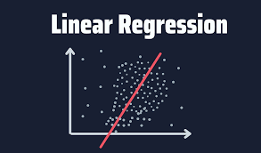

This is a visualization that shows the year on year visualizaton of Road accidents,
fatalities and casualties. It also gives information about the number of vehicles involved
in these crashes and their casualties and fatality rates.
The visualizaton allows you to filter data to specific dates, severity of accidents,
location and important statistics that will help you draw insights easily.


Collection of Tableau Dashboards on a wide range of situations and occurances.

This project will take you through the process of addressing missing data in a dataset.
The project takes you through step by step process Through my capstone project at the end of my Advanced Google Data Analytics Certification

This process takes you through steps to perform Sales Analysis.
The project takes you through step by step exploration of datasets. This helps to draw a correlation between two or more variables and how some variables can affect an event.
Exploratory Data Analysis made on Road crash data collected from Queensland Australia from 2001 to 2020.
The project includes cleaning of data and discriptive analysis.

This project takes you through steps to perform simple linear regression.
This process takes you through steps to perform descriptive statistics.